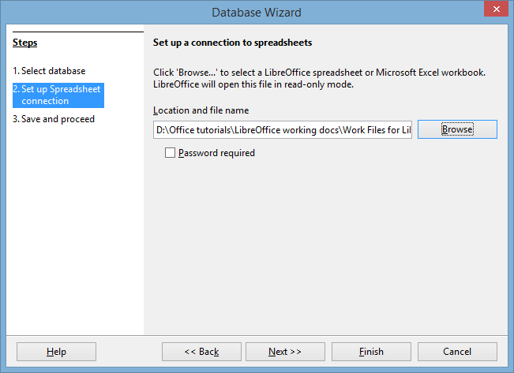
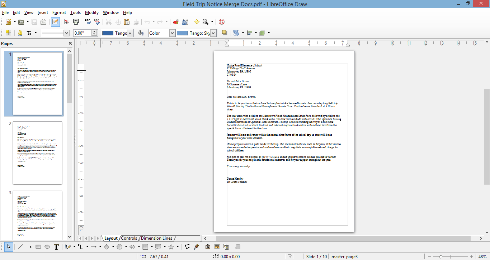
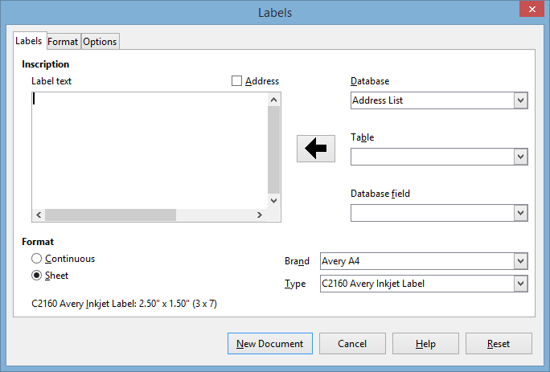

Lesson 7 Mail Merge and Related Operations¶
7 MAIL MERGE AND RELATED OPERATIONS
Form Letters and Mailing Labels
LEARNING OUTCOMES
In this tutorial you will complete the following Mail Merge tasks[^1]:
• prepare a data source document (a LibreOffice Base database) for a form letter;
• create the form letter;
• prepare a set of field trip notices;
• prepare mailing labels;
• prepare a new form letter using a macro and an existing data source document (a LibreOffice Base database).
BEFORE YOU BEGIN
Setting up for the tutorial
If you completed Lesson 1 of these tutorials, you can skip the rest of this section and proceed directly to the next section (7.1 Preparing an Address List in Calc—next page). If you did not complete Lesson 1, then you must do this now, before proceeding with the rest of Lesson 7.
The set of Work Files for LibreOffice ideally should be stored on a Flash drive (USB drive) in three folders named Base Files, Impress Files, and Miscellaneous Files. You need to create a fourth folder for the data files that you will be creating while working your way through the tutorials. This fourth folder will be called Data Files.
Here are the steps to prepare these folders now before proceeding with this tutorial.
First, Unzip the set of Work Files for LibreOffice by double clicking on the File name on your computer (your instructor will help you with this if you are working with a class) and Extract them onto your flash drive
Double click on the Work Files for LibreOffice folder to open it
Now, inside the Work Files for LibreOffice folder you need to create a new, fourth, folder called Data Files. Here’s how you do this.
In the Work Files for LibreOffice folder, select New Folder (Fig. 7.1).

Fig. 7.1 Creating a New Folder
The system will create a new folder for you and then wait for you to give it a name of your choice (Fig. 7.1 above).
Call the new folder Data Files
During the course of these tutorials you will be storing many files in this Data Files folder.
**7.1 PREPARING aN Address List IN CALC **
This exercise will show you how to create an address list data source document using the Calc spreadsheet, which you will then convert into a Base database for the purpose of merging the data with a form letter.
Entering the data for the Address List spreadsheet
Start by opening a new LibreOffice Calc spreadsheet
Now go to File > Save As…, navigate to your USB drive
LibreOffice Work Files > Data Files > Spreadsheet Documents and Save the spreadsheet with the name Address ListIn the new Address List spreadsheet, across the first row (row 1) enter the following eight (8) column headers:
Header for row 1, Column A: ID
Header for row 1, Column B: Home Contact
Header for row 1, Column C: Student First Name
Header for row 1, Column D: Student Last Name
Header for row 1, Column E: Address Line 1
Header for row 1, Column F: City
Header for row 1, Column G: State
Header for row 1, Column H: Zip Code
When you are done, the column headers in your spreadsheet should look like Figure 7.2.

Fig. 7.2 Naming the column headers for the data source document
In lessons 4 and 5 you learned how to widen columns. if your columns are too narrow for the column headers here and there, go ahead and make them wider, as in Fig. 7.2 on the previous page.
The ID field (column A) will start with the value 1 (one) and increase by 1 for each record (this will be the Primary Key when you convert the spreadsheet into a Base database).
Type in the data for the first record—starting with the value 1 for the ID; then make up data for each of the other fields in the appropriate column of the spreadsheet, starting in column B with the Home Contact (the name of the student’s parents or other guardian—Mr. and Mrs. Brown, for example)
After the first (Home Contact) entry, hit Tab, then type a Student First Name, and so on across the spreadsheet row
After you type in the Zip Code, the last entry for the first record, click in the ID field for record #2, enter the ID value 2, and carry on entering appropriate data till you have entered the data for all 10 records (or for as many students as you have in your class if you are a practicing teacher)
After you have entered the data for at least ten records, Save the spreadsheet
7.2 converting the Calc spreadsheet to a base database
The next step in our mail merge process involves converting the Address List spreadsheet, which you just created, into a Base database data source object—which is necessary if you want to merge the data source with a Writer form letter. Here are the steps to do this.
In the File menu select New and, in the menu of LibreOffice applications, select Database (Fig. 7.3)

Fig. 7.3 Opening a new database
This will bring up the Database Wizard (Fig. 7.4).
Fig. 7.4 The LibreOffice Database Wizard
In Step 1 of the Wizard (Select Database), click to select the radio button next to Connect to an existing database (Fig. 7.4 above), then click on the down arrow in the accompanying data box and, from the list of different application types that pops up, select Spreadsheet (Fig. 7.4 above) and click on Next>> to go to Step 2 of the Database Wizard
In Step 2, click on Browse and, in the Open dialog box that pops up, in your Work Files for LibreOffice > Data Files > Spreadsheet Documents folder, double click on Address List to put it in the Location and file name data box (Fig. 7.5)

Fig. 7.5 Setting up a Spreadsheet connection
Click on Next >>, then in Step 3 of the Wizard, leave the selections as they are (Fig. 7.6), leave the radio button next to Yes, register the database for me checked, and also leave checked the box next to Open the database for editing, then click on Finish
Fig. 7.6 Final step in converting the Address List data source to a Base database
The Wizard will ask you to Save the new database, so click on Save, navigate to your USB drive > Work Files for LibreOffice > Data Files > Database Documents folder, name the database Address List, and click on Save again
The new Base database will open on your screen (Fig. 7.7).

Fig. 7.7 The new Base database data source
Make sure Tables is selected in the Database frame (see Fig. 7.7 above), then double click on Sheet1 to open the Table so that you can check that the Address List data has been correctly imported from the spreadsheet you created at the beginning of this exercise (Fig. 7.8 shows data created for this lesson by the author; yours will be different)
Fig. 7.8 The Address List imported to the Base database
Assuming everything looks good, you are ready to proceed with the next step in the mail merge process, which involves the creation of the Form Letter.
7.3 CREATING the form letter (THE FIELD TRIP notice)
Step 4: creating the Field Trip Notice into which will be merged the records that you have prepared in the Address List database.
Fig. 7.9 on the next page shows the complete contents of this Field Trip Notice letter.
Don’t start typing it just yet—follow the directions on the ensuing pages in order to avoid making mistakes.
You’re going to begin by opening, and renaming, a Writer template document called Letters, which is already stored in the Work Files for LibreOffice folder on your USB drive.
In the File menu select Open, then navigate to your USB drive > Work Files for LibreOffice > Miscellaneous Files > Merge Documents, and double click on the Letters document to open it
Now, in the File menu select Save As…, navigate to the Work Files for LibreOffice > Data Files > Writer Documents folder, type Field Trip Notice for the new document name, then click on Save
You are now ready to use Writer’s mail merge tools to produce a customized, that is to say individualized, letter to send to the parents or guardians of each student in your class.
In Fig. 7.9, the placeholders (where the field names are enclosed by the
<
DO NOT START TYPING YET! Bookmark this page. The exercises on the next page explain how to proceed. Follow the steps carefully.
Fig. 7.9 The final version of the Field Trip Notice form letter
Inserting the date
The unedited Field Trip Notice document is open on your screen with the bare bones of the form letter (the school address at the top, the beginning of the salutation “Dear”, and the conclusion (Yours sincerely, etc.).
You need to put the date at the top of your Field Trip Notice document, immediately after the address, which, in a real situation, would be the official address of the school where you are a teacher.
Position the cursor on the blank line immediately after the address at the top of the page, then, in the Insert menu select Fields > Date
You should now have the date displayed in your form letter right after the school address at the top of the page. You’ll maybe recall from Lesson 1 that the default all-numeric format for the date can be confusing in other countries, so you need to select a style that is unambiguous.
Right click on the inserted date and, in the context menu, select Fields… then, in the Edit Fields dialog box, click on the date format that looks like Friday, December 31, 1999 and click on OK (Fig. 7.10)

Fig. 7.10 Insert Date feature of LibreOffice
That takes care of the date format.
Viewing the Data Source for the Field Trip Notice
Now it’s time to connect your Field Trip Notice to the Address List database that you created in the previous exercise (Section 7.3 of this tutorial).
In the View menu, select Data Sources
You should now have a new window right at the top of your screen, at the top of the page, showing, on the left, a list of the databases you have registered with LibreOffice.
The Address List is the database you want to use with the Field Trip Notice.
In the list of registered databases, click on the small + (plus sign) to the immediate left of Address List to show Queries and Tables (Fig. 7.11 on the next page)
Now click on the small + (plus sign) to the immediate left of Tables to show Sheet1
Sheet1 contains the data that you imported into the database from the Address List spreadsheet you created in Section 7.3 of this tutorial.
Click on Sheet1 and wait while LibreOffice fetches all the data from the Sheet1 table and displays the data as a table in the window above the form letter and to the right of the list of registered databases (Fig. 7.11, again your data will be different)

Fig. 7.11 Viewing the LibreOffice Data Sources
**Inserting fields (placeholders) into your form letter **
In the Figures that follow, ignore the data you see because yours will be different.
You are now going to insert into the form letter the first set of placeholders—for the receiver’s (recipient’s) name and address—the receiver is the parent or guardian of one of your students.
The receiver’s address, after your own (school) address at the top of the letter, will start with the Home Contact field. So you need to tell Writer to merge the form letter with the corresponding data from the Address List database. Here is how you do this.
In the form letter, use the mouse to position the cursor on the empty line immediately above the salutation: “Dear” and press Enter to space down one line
Use the mouse to drag the title Home Contact down to the correct position for the Home Contact in the first line of the recipient’s address (Fig. 7.12)

Fig. 7.12 Dragging the Home Contact merge field down into the form letter
Writer quickly displays <
Next you need to add the remaining placeholders for the Home Contact’s address (see Fig. 7.12 previous page).
The cursor should be waiting at the end of
<
Home Contact>, so press the Enter key to move to a new lineOnce again, use the mouse to drag the title Address Line 1 down to the correct position on the new line after
<
Home Contact> (which will be the second line of the form letter recipient’s address)
Writer adds the new merge field to the address.
Press the Enter key to move to a new line, use the mouse to drag the title City down to the correct position on the new line after
<
Address Line 1> (which will be the third and last line of the form letter recipient’s address)Now stay on the same line, type a comma (,) followed by a space, and use the mouse to drag the title State down to the correct position on the last line of the recipient’s (Home Contact’s) address
Hit the space bar once, then use the mouse to drag the title Zip down to the correct position at the end the last line of the recipient’s (Home Contact’s) address
This rounds off the address that is to be merged with the Field Trip Notice form letter, which should now look like Fig. 7.13.
Fig. 7.13 Form letter after merging the recipient’s address and salutation
Press the Enter key to space down after the address
So far, so good. Next you need to put a placeholder for the Home Contact after the salutation Dear… at the beginning of the letter (Fig. 7.13 above).
Put the cursor right after the word Dear, then press the Space bar to space over one space and use the mouse to drag the title Home Contact down to the correct position after the salutation Dear…
By now you should be getting the idea of how to insert merge fields into the Field Trip Notice as you go along.
Refer to the Field Trip Notice letter (Fig. 7.9 on page 196) as you complete the form letter.
Type the remaining text of the Field Trip Notice letter illustrated in Fig. 7.9, inserting the merge placeholders where indicated
Be sure to put a space before and/or after each Placeholder so that the data will be correctly spaced grammatically in the final version of the letter
When you have finished, Save the Field Trip Notice form letter once more
7.4 Printing the FIELD TRIP NOTICE
Before printing your Field Trip Notice letters on paper (hard copy), it’s always a good idea to preview them on the screen (soft copy), with the appropriate data filled in for each version of the letter, so that you can confirm that the data from the Address List source document has been correctly merged with the form letter. In LibreOffice, this is all part of the Print function.
From the File menu select Print
LibreOffice immediately recognizes that the Field Trip Notice document contains Address List database fields and asks you to confirm that you want to print a form letter (Fig. 7.14).
Fig. 7.14 Prompt to confirm form letter
Click on Yes
After a few seconds, you are presented with the Mail Merge dialog box (Fig. 7.15).

Fig. 7.15 Mail Merge dialog box
You want the output to go to a File. You also want to save the merged document as a single document which will contain all 10 of the Field Trip Notices, each one individually tailored to the Home Contact of a different student in the class.
Click on the radio button next to File to select that option and leave the radio button next to Save as single document selected (Fig. 7.15 on the previous page) then click on OK
LibreOffice now displays the Save As dialog box, prompting you to Name the Field Trip Notice merge file and decide where you want to save it.
In the Save As dialog box, navigate on your USB drive, to your LibreOffice Work Files > Data Files > Writer Documents folder, then, in the File name: data entry box, type Field Trip Notice Merge Letters and click on the Save button
The document Field Trip Notice Merged Letters is several pages long—at least 10 if each letter fits on one page, but 20 if each letter flows over onto a second page. Saving the merged letters is a good idea. It means that you have a copy of the final version of the updated letters for your records—a customary practice with regard to professional correspondence.
Previewing your letters on screen
You’re nearly there. But first you need to take a look at the Field Trip Notice Merge Letters to check that the data from the Address List has been correctly merged with the file.
Go to File > Open and double click on the Field Trip Notice Merge Letters file to Open it
This a long document, containing all ten of the field trip notices, so scroll through to the end to check (a) that there are indeed 10 letters (or however many you records you entered into the Address List database) and (b) that each letter has the appropriate merged data
Notice how the data from the Address List has been merged into each of the letters, giving each letter a personalized appearance (Fig. 7.16 on the next page).
Editing (further customizing) the recipients’ letters
At this stage, you could do some final editing of the individual letters (the Field Trip Notices), prior to printing them as hard copy. The set of notices are all saved in one file and you can “visit” each letter and add a comment here or there which pertains to a particular student or the Home Contact.
For example, you could add a sentence to each letter saying something special about the student. This would further individualize the letters, giving parents the sense that the letter they receive is unique to them. In this way you can further personalize what is, in fact, a form letter. This is always a good thing to do, if you have the time.
After you have checked all ten of the Field Trip notices, and made any final edits or personal touches you want, Save the Field Trip Notice Merge Letters document

Fig. 7.16 The Field Trip Notice Merged Letters
Saving a PDF version of the merged Field Trip Notices
Now is the time to convert the merged Field Trip Notices to PDF format.
At this stage, you have the Field Trip Notice merged with the Address List database and safely saved as a LibreOffice Writer document. But it would be a good idea to save the document as a PDF file, before going on to print the letters as hard copy (on paper) or soft copy (on the screen).
PDF stands for “Portable Document Format” and it was designed to allow for easy sharing a documents across different computers and operating systems. In other words, a PDF file, once saved, keeps its formatting/layout no matter where it might be viewed or printed. It is a more reliable format for all kinds of different types of documents.
Converting a document to PDF format is very easy to do. Essentially, you’re going to repeat the steps you took when you completed the merge of the Address List data into the Field Trip Notices merged document.
The Field Trip Notice merge document should still be open on your screen, but if it is not, from the File menu select Open and double click on the file Field Trip Notice to open it
Go to File > Print and, in the dialog box that pops up asking you to confirm that this is a form letter that you want to print, click on Yes
In the Mail Merge dialog box that comes up next, click on the radio button next to File to select that option
Leave the radio button next to Save as single document selected (Fig. 7.15 on page 200 above) then click on OK
The Save As dialog box comes up on the screen and you are asked to name the document and decide where you want to save it. This time you’re going to save the document as a PDF file, so here is how you do that.
In the Save As Type: data entry box, click on the down arrow next to Save as type: and, in the menu of file types that pops up, click on the option for PDF - Portable Document Format (.pdf) (Fig. 7.17)
Fig. 7.17 Selecting the PDF file type for the Field Trip Notice merged document
Make sure you are saving to your LibreOffice Work Files > Data Files > Writer Documents folder (Fig. 7.17 above)
Now, in the File name: data entry box, type Field Trip Notice Merge Docs and click on Save, then wait while the Mail Merge Wizard’s Print Monitor saves the ten Field Trip Notices in PDF format (Fig. 7.18)

Fig. 7.18 Saving the PDF version of the Field Trip Notices
Printing the PDF version of the Field Trip Notices
You no longer need the Field Trip Notice Writer document, so close it, then go to File > Open and open the Field Trip Notices Merge Docs document (the PDF file)
In the left hand frame of the PDF window, you are now presented with thumbnails for each of the ten Field Trip Notices. On the right hand side of the window, you can see the first of the 10 Field Trip Notices containing all the merge field data from the first record in the Address List database (Fig. 7.19).

Fig. 7.19 Printing the PDF version of the letters with the Merge Fields filled in
In the left hand frame of the PDF document (Fig. 7.19 above), click in turn on each of the thumbnails of all ten versions of the Field Trip Notice to scan through the recipients’ letters and confirm that the correct data has been merged with each one
If you intend to print out the Notices on paper, assuming all is well, and assuming you have a printer connected to your computer and turned on (with paper in the hopper), go ahead and click on File > Print… and Writer will print the 10 form letters
Close the Field Trip Notice Merge Docs PDF document when you are done
7.5 Preparing mailing labels
Mailing labels are like those Return-Address stickers you put on the outside of your envelopes, or those address stickers that you sometimes find on mass-mailed items that you perhaps have received in the mail. Producing them is simple enough, especially if you have completed all the tutorials up to this point.
Deciding on the data for the mailing label
Writer Merge documents, such as mailing labels, are always linked to a database. We’ll keep it simple for now, so you’ll use the Address List database you created for the Field Trip Notice form letter. You know by now how to create your own database of addresses, so you could create an address list of your own; in fact you probably have an electronic address list which you could, if you wanted, use for this exercise.
First you need to open a new Labels document.
Go to File > New > Labels
You should see the Labels dialog box on your screen (Fig. 7.20).

Fig. 7.20 The new Labels dialog box
You now need to make selections in the Database, Table, and Database field data entry boxes. You will also move into the Label Text box a complete set of Address List database fields for the Home Contact address, and you have to select the Brand and Type of mailing label you want to use (Fig. 7.20 previous page).
Fig. 7.21 shows the Labels dialog box after you have completed these tasks.
Fig. 7.21 The Labels dialog box after filling out the various entries
The following directions will step you through this process of filling out the Labels dialog box; follow them carefully. Notice, in Fig. 7.21, that you are going to lay out the Recipient address as it would appear on an envelope—as a mailing label.
In the Database entry box, click on the down arrow at the end of the data entry box and, from the list of databases, select Address List
Now, in the Table entry box, click on the down arrow at the end of the data entry box and, from the list of Tables, select Sheet1
Next you have to set up the layout for the recipient (Home Contact) address for the mailing label.
In the Database field entry box, click on the down arrow at the end of the data entry box and, from the list of database fields, select Home Contact, then click on the large arrow to transfer the Home Contact field across to the Label Text area
Click on the Enter key to move the cursor to a new line
Again, in the Database field entry box, click on the down arrow at the end of the data entry box and, from the list of database fields, select Address Line 1, then click on the large arrow to transfer the Address Line 1 field across to the Label Text area
Click on the Enter key to move the cursor to a new line
In the Database field entry box, click on the down arrow and, from the list of database fields, select City, then click on the large arrow to transfer the City field across to the Label Text area
Type a comma after the City field, then hit the **space bar **
In the Database field entry box, click on the down arrow and, from the list of database fields, select State, then click on the large arrow to transfer the State field across to the Label Text area
Hit the space bar to space after the State field
Finally, in the Database field entry box, click on the down arrow and, from the list of database fields, select Zip, then click on the large arrow one last time to transfer the Zip field across to the Label Text area
Selecting the standard format for the mailing label
The mailing labels are now filled with the database fields; all that remains is to tell LibreOffice what standard format you want them to have for your Field Trip Notices envelopes.
We’re going to go with Avery A4 for the Brand and C2160 Avery Inkjet Label for the Type. But the label format doesn’t have to be Avery A4, of course.
If you already have sheets of mailing labels that you intend to use for this exercise, check out the box they come in and look for the Company Brand and Type of label. Then look up the appropriate Brand and Label Type in the menus that pop up when you click on the down arrows for the respective data entry boxes.
So, for your own purposes you can select any option you like; otherwise, for the sake of this tutorial go with the selections that follow for now.
In the Format area of the Labels dialog box (Fig. 7.20 previous page), leave the Sheet option already selected
In the Brand data entry box, click on the down arrow to bring up the menu of standard company mailing label formats and select the Avery A4 option
Then, in the Type data entry box, select C2160 Avery Inkjet Label
In the Labels dialog box, click on the Options tab, and be sure to click to put a check mark next to Synchronize contents to ensure that all the labels are merged with the Address List database
Finally click on New Document
Immediately, LibreOffice presents a sheet of mailing labels with all the database fields laid out as per the design you specified in the Labels dialog box (Fig. 7.22).

Fig. 7.22 The template mailing labels sheet
Click on the Synchronize Labels button (Fig 7.22), then go to File > Save As…, navigate to your USB drive > Work Files for LibreOffice > Data Files > Writer Documents folder and save the new document with the name Field Trip Notice Merged Mailing Labels
Previewing your mailing labels on screen
Now you are ready to go ahead and preview the sheet of mailing labels with all the data from the database, which you should always do before sending them to the printer.
From the File menu select Print
As before, LibreOffice immediately recognizes that the Field Trip Notice Merged Mailing Labels document contains Address List database fields and asks you to confirm that you want to print a form letter.
Click on Yes
After a few seconds, you are presented with the Mail Merge dialog box (Fig. 7.23).
Fig. 7.23 Mail Merge dialog box
You want the output to go to a File. You also want to save the merged document as a single document which will contain all 10 of the Field Trip Notice Mailing Labels, each one individually tailored to the Home Contact of a different student in the class.
Click on the radio button next to File to send the output to a File, and leave the radio button next to Save as single document selected (Fig. 7.23 above) then click on OK
LibreOffice now displays the Save As dialog box, prompting you to Name the merge file and decide where you want to save it.
In the Save As dialog box, navigate, on your USB drive, to your LibreOffice Work Files > Data Files > Writer Documents folder, then, in the File name: data entry box, type Field Trip Notice Merged Mailing Labels as before and click on the Save button
LibreOffice will ask you if you want to save the file with the same name as the existing file, which you do, so click on Yes then Close the Field Trip Notice Merged Mailing Labels
As noted above, it’s always a good idea to take a look at the Field Trip Notice Mailing Labels to check that the data from the Address List has been correctly merged with the file.
Go to File > Open and double click on the Field Trip Notice Merged Mailing Labels file to Open it
Notice how the data from the Address List has been merged into each of the mailing labels, giving each label a customized look.
Check out the layout and content of the mailing labels. If you had many addresses in your Address List you might need to scroll to check them all out, or you could check out individual addresses by clicking on Ctrl-f to Find a recipient… This isn’t necessary for this exercise since you have only a few (10) names and addresses in your Address List.
You don’t need the Field Trip Notice Mailing Labels file for the exercise that follows, so go ahead and Close it, but keep open the Field Trip Notice Merged Mailing Labels document
Saving a PDF version of the merged Field Trip Notice Mailing Labels
Now is the time to convert the Field Trip Notice Merged Mailing Labels to PDF format so that you will have a version in that format for printing purposes. You’ll recall that PDF stands for “Portable Document Format” and it was designed to allow for easy sharing a documents across different computers and operating systems. In other words, a PDF file, once saved, keeps its formatting/layout no matter where it might be viewed or printed. It is a more reliable format for all kinds of different types of documents.
Converting a document to PDF format is very easy to do. Essentially, you’re going to repeat the steps you took when you completed the merge of the Address List database into the Field Trip Notice Merged Mailing Labels document. Here’s a reminder of the steps to do this.
The Field Trip Notice Merged Mailing Labels document should still be open on your screen, but if it is not, from the File menu select Open and double click on the file Field Trip Notice Merged Mailing Labels to open it
Go to File > Print and, in the dialog box that pops up asking you to confirm that this is a form letter that you want to print, click on Yes
In the Mail Merge dialog box that comes up next, click on the radio button next to File to select that option
Leave the radio button next to Save as single document selected (Fig. 7.23 on page 209 above) then click on OK
The Save As dialog box comes up on the screen and you are asked to name the document and decide where you want to save it. This time you’re going to save the document as a PDF file, so here is how you do that.
In the Save As Type: data entry box, click on the down arrow next to Save as type: and, in the menu of file types that pops up, click on the option for PDF - Portable Document Format (.pdf) (Fig. 7.24)
Fig. 7.24 Selecting the PDF file type for the Field Trip Notice merged document
Make sure you are saving to your LibreOffice Work Files > Data Files > Writer Documents folder (Fig. 7.24 above)
Now, in the File name: data entry box, type Field Trip Notice Merged Mailing Labels (you can keep the same name since it’s a different file type (PDF) than the Writer version) and click on Save, then wait while the Mail Merge Wizard’s Print Monitor saves the mailing labels in PDF format
Printing the PDF version of the mailing labels
Go to File > Open and open the Field Trip Notice Merged Mailing Labels document (the .pdf version)
In the right hand frame of the PDF document, scan through the recipients’ address on each of the labels and confirm that the correct data has been merged with each one
If you intend to print out the mailing labels on paper, and assuming you have a printer connected to your computer, go ahead and click on File > Print… and Writer will print the mailing label sheet(s) for you
Close the Field Trip Notice Merged Mailing Labels PDF document when you are done
7.6 PREPARING A NEW FORM LETTER USING AN EXISTING DATABASE
By way of reinforcement of what you have learned in this lesson, let’s prepare another form letter, this time using an existing database.
In your Work Files for LibreOffice/Miscellaneous Files/Merge Documents folder there is a database called Roster 2014. It is a set of records for a sample class of 25 students. You are going to use the data in this database to prepare a form letter called Mid Term Report, which will report to parents/guardians on their child’s progress-to-date half way through a semester. You are going to have Writer merge the Mid Term Report with the Roster 2014 database.
First you need to open a Writer template as a basis for the report. The template is called Letters.
Go to File > Open > navigate to your USB drive > Work Files for LibreOffice > Miscellaneous Files > Merge Documents > and double click on Letters to open it
Registering the Roster 2014 database
You must register the Roster 2014 database with LibreOffice before you can use it to merge the Roster 2014 data into the Letters merge document. Follow these steps to do this.
Go to the Tools menu > Options…, then in the left hand frame of the Options window select LibreOffice Base > Databases (Fig. 7.25)

Fig. 7.25 The Tools > Options dialog box
In the right hand frame, in the Registered databases section, click on New
This brings up the Create Database Link dialog box (Fig. 7.26).

Fig. 7.26 Create Database Link dialog box
In the Create Database Link dialog box, click on Browse and navigate to your USB drive > Work files for LibreOffice
Miscellaneous Documents > Merge Documents and double click on Roster 2014 to put it in the Registered name data entry box (Fig. 7.26 above), then click on OK
Notice that the Roster 2014 database is now in the Registered Name list in the Registered Databases section of the Options dialog box (Fig. 7.27).

Fig. 7.27 Adding Roster 2014 to the list of registered databases
Click on OK again to complete the registration of the Roster 2014 database
The Roster 2014 database is now a registered database and may be used as a data source for the Letters document you are working with and which should still be open on your screen.
In the View menu select Data Sources, then, in the list of databases at top-left of the Letters window, click on the + (plus sign) next to Roster 2014 and again on the + (plus sign) next to Tables to bring up the Roster 2014 Table (Fig. 7.28)

Fig. 7.28 Viewing the Roster 2014 data source
Now, still in the top-left frame, click once on Roster 2014 Table, then wait while the data from the Roster 2014 database is displayed top-right (Fig. 7.29)

Fig. 7.29 The Roster 2014 data displayed top right of the Letters window
Creating the Mid Term Report form letter
Next you are going to use the Letters Writer document (still on the screen and also saved on your disk) to create a Mid Term Report document which will go out to the parents of your students. The report is illustrated in Fig. 7.29 on the next page. Do NOT start typing the report in yet! You have a couple of other things to do to get set up for the mail merge.
First you must save the Letters document with a different name so that you will keep the copy of the Letters document as a template for future use.
Select File > Save As…
Change the name of the Letters document to Mid Term Report (this will be the name of the form letter you are going to create), then navigate to your USB drive > Work Files for LibreOffice > Data Files > Writer Documents folder and click on Save
You are going to have Writer produce one letter for each student in the Roster 2014 class. As you can see, the form letter illustrated in Fig. 7.30 on the next page reports to parents on how well their child is doing half way through the semester.
You already told Writer that you want to merge the form letter with the data stored in the Roster 2014 database. The placeholders in Fig. 7.30 on the next page (where the field names are enclosed by the
<
…> brackets) indicate the location in the form letter where data from the Roster 2014 database is to be merged when the letters are actually printed out.Wherever you see a placeholder (
<
…>), use the mouse to drag the appropriate field header down from the data displayed top right as you work your way through the letter.You already completed a similar exercise earlier in this lesson. If you are still unsure about what to do, you might like to check back at what you did—section 7.3 Creating the form letter (the Field Trip Notice), starting on page 195.
All that remains is for you to type the letter as it is illustrated in Fig. 7.30.
Hodge Road Elementary School
123 Mingo Bluff Avenue
Johnstown, PA 23456
Tuesday, March 10, 2015
<
Home Contact><
Address Line 1><
City>,<
State><
ZIP Code>Dear
<
Home Contact>,As you may already be aware, I am
<
First Name>’s home room teacher this year. You will be pleased to know that the class has settled down well, and the children are making excellent progress on the whole.I am writing to report to you about
<
First Name>’s participation in school this first half of the current session. I’m sure you appreciate how important it is for you to be aware of where your child stands, especially in regard to class grades and attendance.<
First Name>’s current grade is<
Grade>.<
First Name> has missed<
Comment> days so far this session, which is<
Comment>.Please feel free to contact me at any time to arrange a conference, especially if the grade or attendance data in the previous paragraph are not what you expected.
I can be contacted at school between the hours of 7:30 am and 4:00 pm, Monday through Friday. My phone number is 814-269-2923. You may also contact me using email. My email address is vanstanden@keystone.k12.pa.us.
I look forward to hearing from you.
Yours very sincerely,
Mandi Van Staden
Instructional Technology Coordinator
Fig. 7.30 The Mid Term Report form letter
Type the contents of the Mid Term Report as illustrated in Fig. 7.30 above; be sure to use the Date format illustrated (Insert > Fields > Date, right click on the default numeric Date and, in the pop up context menu of Field Options, select the Wednesday, December 31, 1999 style)
When you are done, Save the Mid Term Report
Pasting a chart into the letter
The letter needs one final touch. You are going to put a chart in the Mid Term Report. You will create the chart in a Calc spreadsheet, then copy it into the Mid Term Report. It’s easy enough to do if you already completed the Calc tutorials (Lessons 4 and 5) of this LibreOffice book.
Go to File menu > Open…, navigate to USB drive > Work Files for LibreOffice > Miscellaneous Files > Merge documents and double click on the Gradedata spreadsheet
You are going to create a simple chart using the data in the Gradedata spreadsheet. This will be useful reinforcement of what you learned in Lesson 5. Here are the steps, if you need the help.
Highlight cells A1 through B6 (the data that will be represented in the chart), then go to Insert menu > Object
click on Chart… (Fig. 7.31)

Fig. 7.31 Selecting the Chart option in Calc
LibreOffice Calc immediately creates a default plain Column chart based on the data in the spreadsheet, and then presents the Chart Wizard dialog box (Fig. 7.32) to help you create a more interesting or, more to the point, more meaningful chart.

Fig. 7.32 The Chart Wizard dialog box
Start, in Step 1, by selecting the Pie chart option, then click in the check box next to 3D Look (Fig. 7.32 above)
Calc quickly assembles the chart and displays it on the screen (you should see the small handles around the chart indicating that it is a selected object)—Fig. 7.33.

Fig. 7.33 The Grade 4 Reporting Period basic 3D Pie chart
As charts go, it’s pretty plain at this stage, and not very meaningful at all. The chart needs a title and subtitle, and each of the slices need numerical values associated with them.
Fig. 7.34 illustrates what we’re looking for in the final version of the chart.

Fig. 7.34 Final version of the Grade 4 grading period data chart
Essentially, a chart like this is an opportunity to create “a picture worth a thousand words.” And the LibreOffice suite of productivity software does a good job of making this possible with little effort on your part.
Let’s do what is necessary to arrive at this final version of the chart. We don’t need to do anything with Steps 2 and 3 of the Chart Wizard because our data sample is very simple.
So… Start with the Chart Titles (see Fig. 7.33 above).
In the left hand frame of the Chart Wizard dialog box, click on Step 4 to bring up the Chart Wizard > Chart Elements dialog (Fig. 7.35)
Fig. 7.35 The Chart Wizard > Chart Elements dialog
Go ahead and type in the Title: Grade Data Grade 4, Reporting Period 1, then type in the Subtitle: August 18 – September 26, 2014 and click on Finish
Next, let’s change the font of the Title and Subtitle text.
On the Title text (Grade Data Grade 4, Reporting Period 1), double click anywhere to put a blue box around it, then triple click on the Title text to select the whole of the title text (Fig. 7.36)
Fig. 7.36 Selected Title text
Now, right click anywhere in the Title Text box and, in the context menu that pops up, select Format Title… to bring up the Main Title dialog box (Fig. 7.37)

Fig. 7.37 Formatting the Chart Title
In the Main Title dialog box (see Fig. 7.37 above), click on the Font tab and, in the Font menu, scroll to select Comic Sans MS, then in the Style menu select Bold, and in the Size menu select 12, then click on OK
Now you need to do the same for the Subtitle text: August 18 – September 26, 2014.
Double click anywhere on the Subtitle text to put a blue box around it, then triple click on the Subtitle text to select the whole of the text
Now, right click anywhere in the Subtitle Text box and, in the context menu that pops up, again select Format Title… to bring up the Subtitle dialog box (more or less the same as Fig. 7.37 above)
In the Subtitle dialog box, click on the Font tab and, in the Font menu, scroll to select Comic Sans MS, then in the Style menu select Regular, and in the Size menu select 10, then click on OK
That takes care of the chart titles. All that remains is to put labels on each of the slices in the Pie Chart to help the reader of the Mid Term Report interpret the data in the chart.
Right click anywhere on the pie chart itself and, in the context menu that pops us, select Insert Data Labels
LibreOffice immediately updates each slice of the Pie Chart with the value (number) from the Gradedata spreadsheet that corresponds to each of the Grades—A, B, C, D, or E (Fig. 7.38).
Fig. 7.38 Updated slices of the Pie Chart
Your last task is to format those numbers in each of the slices so that they stand out and provide more information to the parents or guardians who are going to use the chart to compare their child’s grade with those of the rest of the class.
Right click anywhere on the Pie chart and, in the context menu that pops up, select Format Data Labels… to bring up the Data Labels for Data Series ‘Students’ dialog box (Fig. 7.39)

Fig. 7.39 Data Labels dialog box
Click first on the Data Labels tab and click to put a check mark in the box next to Show value as percentage
Next, click on the Font tab and select Comic Sans MS for the Font, Bold for the Style, and 20 for the Size of the font
Finally, click on the Font Effects tab and select White for the Font Color, and Embossed for the Font Relief, then click on OK
Save the Gradedata spreadsheet with the chart embedded in it
Now you can copy the chart and paste it into the Mid Term Report.
Click anywhere on the white background of the pie chart so that you see the small green handles around the edges of the chart box—which means that the chart is selected (Fig. 7.40)
Fig. 7.40 Finished chart ready to be copied and pasted
Press Ctrl-c to copy the chart to the clipboard
Locate and switch back to the Writer Mid Term Report which is still open on your screen
The Mid Term Report document should now be the active window on the screen.
Click to position the cursor at the very beginning of the paragraph that reads “Please feel free to contact me….”
Press Ctrl-v to paste the chart into the Mid Term Report document then, in the Formatting toolbar at the top of the screen, click on the Center icon to center the chart
As is, the letter probably spills over onto a second page because of the chart. This is no problem if it cannot be avoided.
Navigate to your USB drive > Work Files for LibreOffice
Data Files >Writer Documents folder and Save the Mid Term Report
Final tasks
First you need to complete the merge of the Mid Term Report with the Roster 2014 database.
In the File menu select Print, in the dialog box that pops up click on Yes to confirm that this is a form letter
In the next dialog box, click to send the Output to a File and click on the radio button to Save as a single document, name the file Mid Term Report Merged Document, and Save it again
Next you need to save the merged Mid Term Report as a PDF file.
In the File menu, again select Print, and, in the dialog box that pops up, click on Yes to confirm that this is a form letter
In the next dialog box, click to send the Output to a File and click on the radio button to Save as a single document, then in the Save As dialog box, in the Save as type: data entry box, click on the down arrow at the end of the entry box and, in the menu of file types that pops up, click on the option for PDF - Portable Document Format (.pdf)
Name the file Mid Term Report Merged Document, and Save it again
If you wanted to print them all out on paper, make sure the printer is turned on and has paper in it, then click on File > Print… and proceed as you now know how.
SKILL CONSOLIDATION
Complete these exercises to reinforce what you learned in Lesson 7.
1. Imagine a scenario where you invite your students (as an assignment, perhaps) to prepare sets of questions for tests based on the material that you have covered in class. Each student types his or her questions into the database. You would check the database to make sure that each student had completed the assignment. Then you would print a copy of the full set of test questions for every student to use as a study guide. When the date for the test approaches you would simply select out those that you want to use, and print up the test using the pre-prepared test report format.
Individually or together with a team of your classmates, prepare a database to store sets of test questions. Make up a representative set of, say, 20 questions, and store them in the database. Prepare a test report format (form letter) to merge with the test question database. Use record selection rules to select ten out of the 20 questions. Print out the test (merge to printer).
2. Get together with a group of your classmates or colleagues. Compile a list of suggestions for useful macros to use with Writer—macros like the SchoolAddress macro that you learned in this tutorial. For example, you could create a macro that types out your letterhead—address, telephone number, and the date, using different fonts and sizes. Create half a dozen macros from the best suggestions.
3. Create a form letter to print a set of continuous index cards cataloging your collection of music. Use the Mailing Labels feature for this purpose. Set up a data source containing a sample set of data for at least 6 records. Each record should have at least 5 fields (CD Title, etc.).
4. Meet together with a group of your fellow students or colleagues, come up with a list of suggestions for useful form letters to be used in a school environment, share out the ideas among the group (a minimum of two each), and create the templates for the form letters. Each person in the group should save a complete set.
5. Create a Labels form letter to print a set of individualized set of name tag stickers for a class of students to be worn on the first day of class so that everyone can get to know each other. Use the Mailing Labels feature for this purpose. Set up a data source containing a sample set of data for at least 25 records (use an existing class database, if you have one, or use the Roster 2014 database that accompanies this tutorial).
[^1]: I am indebted to Tony Palaez for his video on Mail Merge at http://www.youtube.com/watch?v=prZJ4w-q9AA